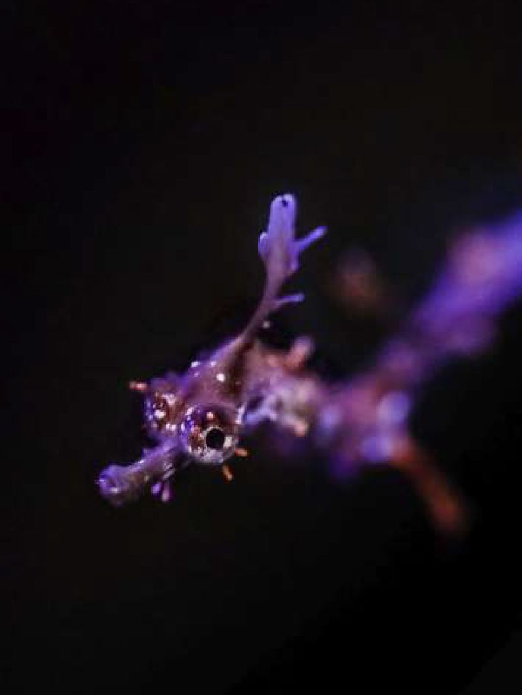

sea creatures


Anemone fish
Among scientists and aquarists, clownfish are also known as anemonefish because they can't survive without a host anemone, whose stinging tentacles protect them and their developing eggs from intruders.
Non-toxic Jellyfish
Jellyfish is a kind of marine life and a kind of jellyfish. Many readers will think that most jellyfish are poisonous, but jellyfish can be eaten, so jellyfish are non-toxic. In fact, jellyfish as a jellyfish, they are also poisonous, their toxicity is a way to protect themselves, in the face of the enemy can be used to defend themselves.
Light Bulb Sea Squirts
Light bulb sea squirts are transparent-looking creatures with white lines which make them look like an electric filament light bulb. They are filter feeders sucking in water and filtering out microscopic particles.
Sea Hares
The clade Anaspidea, commonly known as sea hares (Aplysia species and related genera), are medium-sized to very large opisthobranch gastropod molluscs with a soft internal shell made of protein. These are marine gastropod molluscs in the superfamilies Aplysioidea and Akeroidea.
Queen Angelfish
The queen angelfish (Holacanthus ciliaris), also known as the blue angelfish, golden angelfish, or yellow angelfish, is a species of marine angelfish found in the western Atlantic Ocean. It is a benthic (ocean floor) warm-water species that lives in coral reefs.
Weedy Sea Dragons
The weedy sea dragon, also called the common sea dragon, inhabits the waters off south and east Australia. Compared to the leafy sea dragon, weedies have less flamboyant projections and are usually reddish in color with yellow spots.
Manta Ray
Manta rays, also known as “devil rays,” or “devilfish,” are large members of the eagle ray family. Those nicknames come from the horn-shaped fins on their face, called “cephalic fins.” The curved cephalic fins give a devil horn-like appearance to the rays.
Flamingo Tongue Snail
The flamingo tongue snail (Cyphoma gibbosum) is a species of small but brightly colored sea snail, a marine gastropod mollusk in the family Ovulidae, the cowry allies.
Sea Anemones
Sea anemones are the marine, predatory animals of the order Actiniaria. They are named after the anemone, a terrestrial flowering plant, because of the colourful appearance of many. Sea anemones are classified in the phylum Cnidaria, class Anthozoa, subclass Hexacorallia.